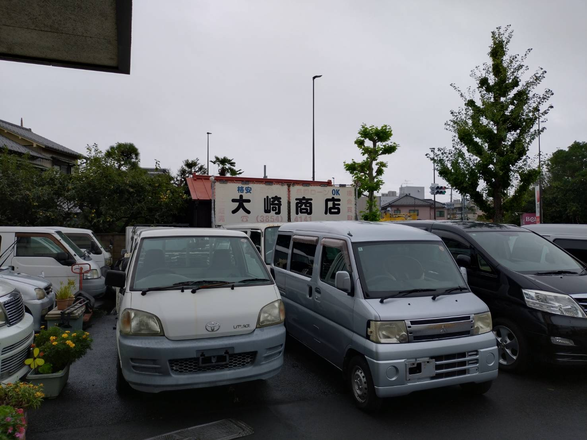

事故車・不動車も
無料引き取り
環七店から車で約50分圏内。
エリア外もご相談ください。
愛車の最後まで、地域のお店に。
廃車手数料無料 ／ その場で現金買取も
☎ 電話で相談する ›受付 月〜土 10:30〜18:00
※無料引き取りは環七店から車で片道約50分圏内。
買取の可否・金額は車種や状態によります。


地域の皆さまに
親しまれるお店を目指して
お車の状態やご希望を
まずはお聞かせください。
ご指定の場所まで伺います。
対応エリア内は出張費0円。
車種・状態に応じて査定。
廃車手続きも代行します。
環七店から車で約50分圏内。
エリア外もご相談ください。
廃車手続き代行・自動車解体。
軽自動車の廃車も無料です。
環七店・入谷店の2店舗。
在庫はお問い合わせください。
SERVICE
お車の引き取りから廃車手続き、中古部品探しまで。
ご相談の内容に合わせてご案内します。
事故で動かなくなった車や、使わなくなった車の処分をご相談いただけます。お車の状態と保管場所を伺い、引き取りをご案内します。
処分をお考えのお車も、車種や状態によっては買取が可能です。まずはお車の情報をお聞かせください。
※買取の可否・金額は車種や状態によります。
買取を電話で相談する引き取り後の廃車手続きもお任せください。お車の処分に伴う手続きを代行し、自動車解体に対応します。
お車の中古部品やタイヤを販売しています。お探しの品がある方は、ご来店前に在庫をお問い合わせください。
〒123-0872 東京都足立区江北7丁目1−3
環七沿い／舎人ライナー 西新井大師西駅
地図を見る ↗営業日のお知らせ2026.09
9月の休業日は、6日・13日・20日・21日・22日・23日・27日です。
事故車や不動車の引き取りも行っています。車の処分のご相談は、まずはご連絡ください。
休業日のご案内を見る ↗CONTACT
引き取りのご相談・部品のお問い合わせはこちら
☎ 03-3854-4141環七店：月〜土 10:30〜18:00（日曜・祝日休業）
既存サイトのお問い合わせフォームへ ↗